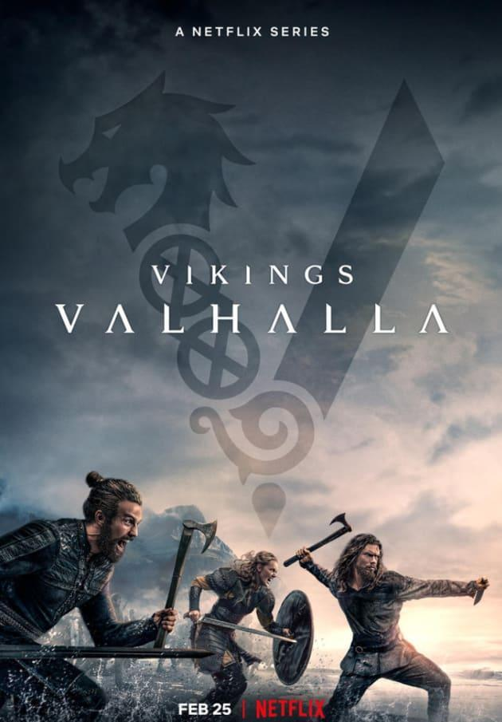
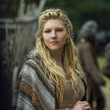
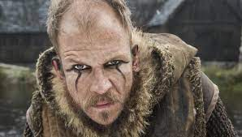
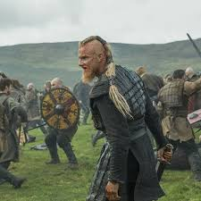
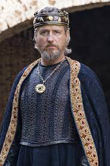

Mis 5 series
Bikingos
Reseña
El vikingo Ragnar Lothbrok es un joven agricultor y hombre de familia que se siente frustrado por las políticas de Earl Haraldson, el conde del lugar que envía a sus invasores vikingos al este de los países bálticos y Rusia, cuyos residentes son pobres como los escandinavos. Ragnar prefiere ir al oeste, al otro lado del océano, para descubrir nuevas civilizaciones. Con la ayuda de su amigo Floki, Ragnar construye una flota de barcos que lo ayudará a alcanzar el mundo occidental. A través de los años Ragnar, que dice ser un descendiente directo del dios Odín, continúa luchando con Earl hasta que los dos se enfrentan en la última batalla por la supremacía.

Personajes
.Ladgerda (Katheryn Winnick)

.Floki (Gustaf Skarsgård)

.Björn Lothbrok (Alexander Ludwig)

.Rey Egberto de Wessex (Linus Roache)

Stranger Things
Reseña
Cuando un niño desaparece, sus amigos, la familia y la policía se ven envueltos en una serie de eventos misteriosos al tratar de encontrarlo. Su ausencia coincide con el avistamiento de una criatura terrorífica y la aparición de una extraña niña.

Personajes
.Max Mayfield (Sadie Sink)

.Dustin Henderson (Gaten Matarazzo)

.Nancy Wheeler (Natalia Dyer)

.Once (Millie Bobby)